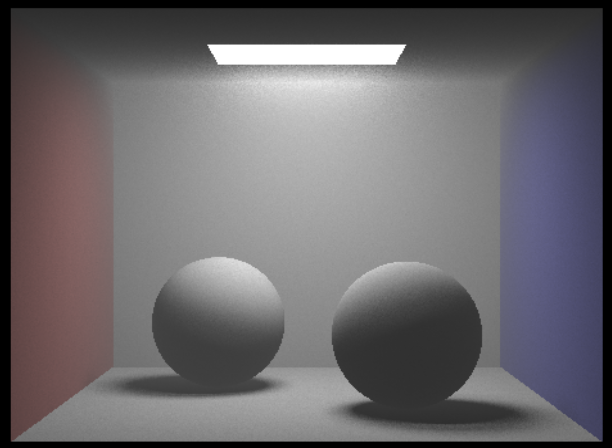

Technical Approach
Starting Point & Problem Context
Our starting point for this project is the CS 184 Project 3 ray tracer. The skeleton code includes the ray-scene
intersection, acceleration structure, and physically based lighting and materials. While our starting point able
to generate realistic images, it lacks of the implementation of spotlight and advanced volumetric rendering
techniques that are required to depict phenomena like the Tyndall Effect. To address the issues, we expanded the
render's capabilities by including a complex volumetric rendering,
implementing both homogenous and heterogeneous fog.
The Tyndall Effect is a optical phenomenon where light is scattered by particles that are dispersed in a medium.
This effect causes the particles, like dust or droplets, become visible when light shines through them.
In this project, by focusing on rendering fog and cloud effects, we essentially demonstrate the Tyndall Effect.
Fog, consists of tiny water droplets that suspends in airs, will scatter the light passing through them.
Homogenous Fog
Initial idea
Initially, our approach to implementing homogenous fog, as suggested by Goodman, involved calculating a distance
by selecting a uniform random number, ε, within the range [0, 1]. This value was then used to determine the time,
t, which we interpreted as indicating either a surface or medium intersection. However, we encountered
difficulties integrating this method with our existing ray tracing code. As a result, we opted for a different
strategy based on ray marching.
Ray Marching
As we know that rays that pass through a medium lose energy due to absorption and out-scattering and gain energy
due to in-scattering. We represent the scattering interaction through σs
and the absorption interaction through. Beer-Lambert's Law \[T_{r} = {e^{-\sigma_{t}d}}.\] gives us the
attenuation of the light traveling through some distance d where \[\sigma_{t} = {\sigma_{a} + \sigma_{s}}.\]As
we are only dealing with homogenous mediums for now, the density term is constant. Just like how we use BSDFs for
surface interactions, for media interactions we use a Phase Function since the outgoing direction can now be
scattered in all directions vs just the hemisphere of directions in surface interactions. For isotropic volumes
the phase function is simple being 1/4π as it is equally scattered in all directions. However, for anisotropic
volumes we
use the Henyey-Greenstein Phase function
\[p(\theta) = {{1 \over 4\pi}{{1 - g^2} \over [1 + g^2 - 2g*cos(\theta)]^{3/2}}}.\]
that is parameterized by an asymmetry factor g controlling back and
front scattering.
We can finally put together ray marching as follows:
For a certain number of steps, we march the ray's position forward for a chosen step size and for each step we:
-
Calculate the fraction of light that is not absorbed or out-scattered traveling a segment of the
medium and update the transmission.
-
We sample the light to find the distance to the light and the direction to the light and calculate the
probability we scatter in a certain direction.
-
Calculate the in-scattering contribution by sampling the light and calculate the attenuation the light ray
travels to the point and update the running total of in-scattering light.
Distance Attenuation Variation
by adjusting coefficients and power of the exponential attenuation function, we obtain different levels of radiance
fall of in
the area near the light. Here is a Desmos graph of different exponential fall of function:
which in turn produce the follow different size of radiance fall of (haze area) in the fog near the area light.
9th power exponential attenuation function
5th power exponential attenuation function, big beta
5th power exponential attenuation function, small beta
Heterogenous Fog
For Heterogenous fog, the density varies throughout the medium instead of staying constant. To create this density
field, we implemented a Perlin Noise function that generates smooth, continuous noise that is useful for
simulating natural phenomena such as Fog. Perlin noise provides a natural variability within the cloud texture.
Perlin Noise Function
We implemented our Perlin Noise function by initially generating random normalized vectors that correspond to the
corners of the 3D cube encompassing each sample point. To increase efficiency and reduce the number of directions
generated, we used what's called a permutation table which randomly selects gradients to be at each corner of the
cube. This table is accessed via a hash function hashing the (x, y, z) coordinates of the cube's corners. We
interpolate between the dot products of the distance vectors—extending from the cube edges to our sample
point—and the gradient vectors associated with each corner. This interpolation calculates the final noise
value at the sample point, effectively producing the Perlin Noise.
Updated Ray Marching
A Heterogenous medium changes our ray marching algorithm since the densities along our light ray vary as it
travels through the medium thus our estimation for the in-scattering term is different so we must ray march
our light ray. While we march our light ray we accumulate density values along each sample along the ray. We
replace our constant density with our Perlin Noise function and sample at each point for both rays.

Homogenous Fog rendering of ./dae/sky/CBSpheres.dae
Heterogenous Fog rendering of ./dae/sky/CBSpheres.dae
Perlin Noise Octave
While Perlin noise are commonly used in generating natural texture, the addition of octaves give clouds the extra
furry effect and additional layer of detail and complexity. This method invovles with combining several Perlin
Noise
function at different frequencies and amplitudes. When generating texture like clouds, using multiple octaves
allows
for creating more varied patterns. The low frequency Perlin noise provides a broad and main shapes of the cloud.
The second and higher octave, on the other hand, provides variation in the cloud's edges and them more
natural-looking.
Here is a nice chart
from .
Different octaves and persistence values render clouds of different fluffiness:
cloud with 3 octave and 0.7 persistence
cloud with 4 octave and 0.5 persistence
cloud with 5 octave and 0.7 persistence
cloud with 3 octave and 0.7 persistence
Spot Light Sampling
We wanted to create realistic soft light beams through the fog to visualize how light scatters through a
medium.
To do this we filled in the spotlight constructor and the associated
sample_l function. In the sample_l
function, the function starts by calculating the vector d which represents the direction from
the object to the light source. From here, we use dot product to calculate the angle between light
direction and
the vector pointing toward the object. We denote the angle as spot_angle
If the spot_angleis less than the predefined angle of the spotlight, it indicates the object
is
within the light's cone and the illumination should be calculated. The falloff is
calculated to
reflect
the reduction of light intensity as the angle increases from the central axis of the spotlight.
The solid angle is \( \Omega = 2\pi (1 - \cos(\text{angle})) \)
The probability distribution function is inversely proportional to the solid angle of the cone, as
follows:
\[ p = \frac{1}{\Omega} = \frac{1}{2\pi (1 - \cos(\text{angle}))} \]
By adjusting the PDF according to the solid angle, the function ensures the density reflects the physical
behavior
of a spotlight, where more light is concentrated in a narrow angle. The function will return the light
radiance
scaled by the falloff. If the object is outside the spotlight's angle, the function returns a zero vector,
indicating there's no light contribution, which effective handles objects lying outside the light beam.
Spotlight on Bunny
Spotlight on Bunny through Red Fog